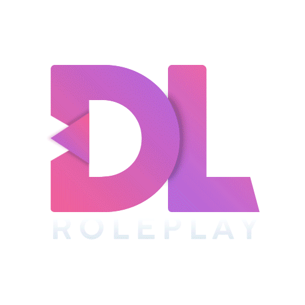

TokoVOIP é a nossa substituição de VOIP no jogo, usando um Plugin personalizado no Teamspeak3..
Isso nos dá muito mais
possibilidades, que atualmente permitem coisas como:
- Melhor qualidade de voz
- Sistema de rádio
- Bate-papo de proximidade exclusivo para cada jogador
- Telefonemas
- Cliques de rádio
- Efeitos de rádio
TokoVOIP tem que ser
instalado e
rodando para jogar nos nossos servidores.
Entre em nosso DISCORD e peça a TAG de morador para seguir um tutorial de instalação
https://discord.gg/dlgames
Servidor TeamSpeak:
Canal TeamSpeak:
Status do Plugin:
Versão do Plugin: